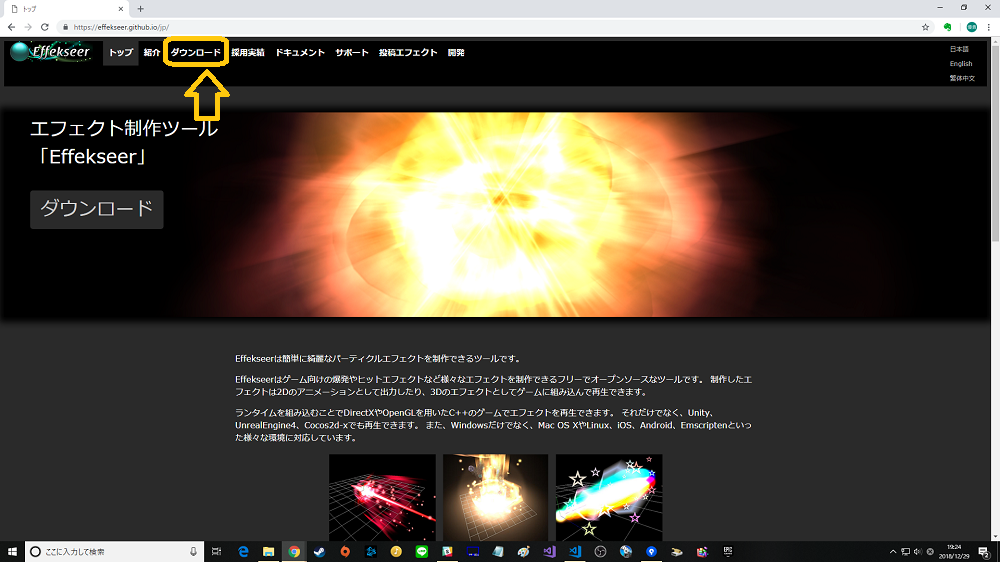
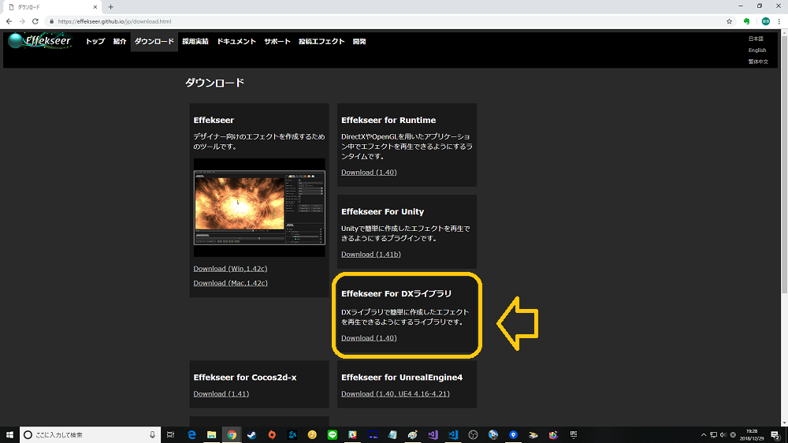
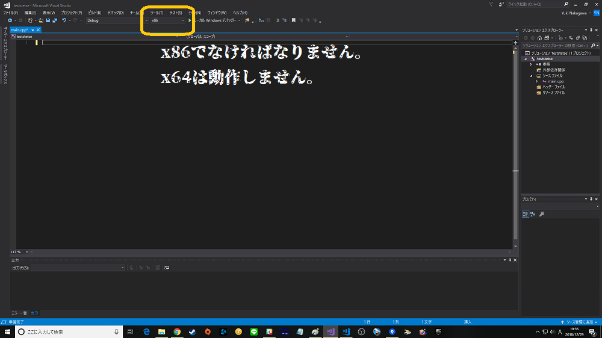
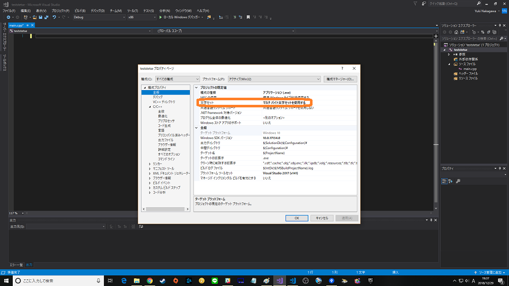
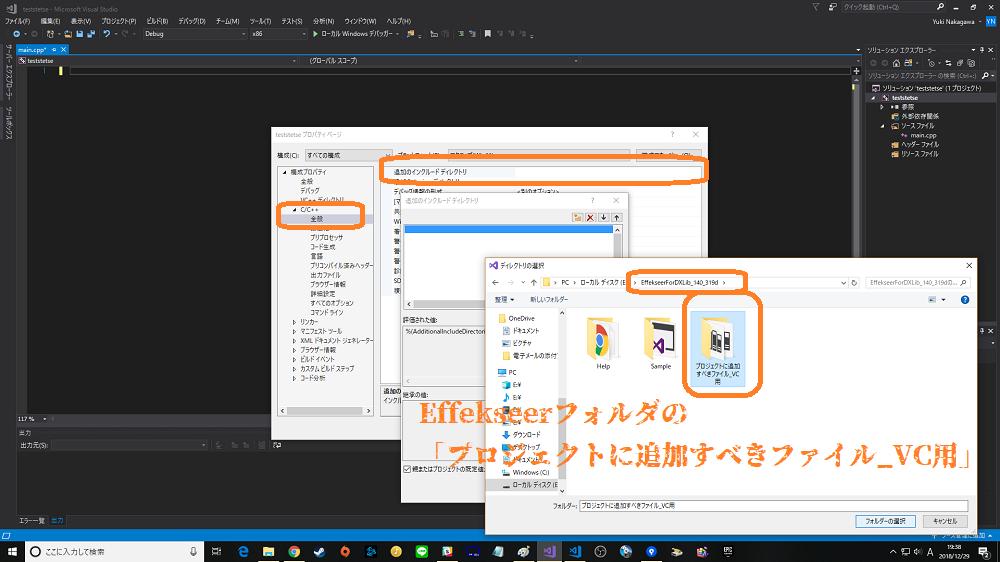
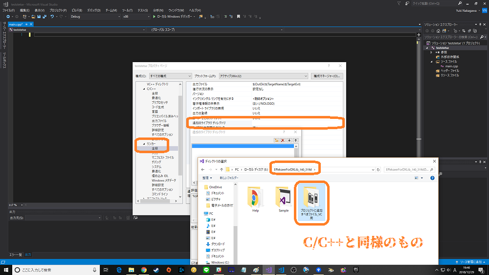
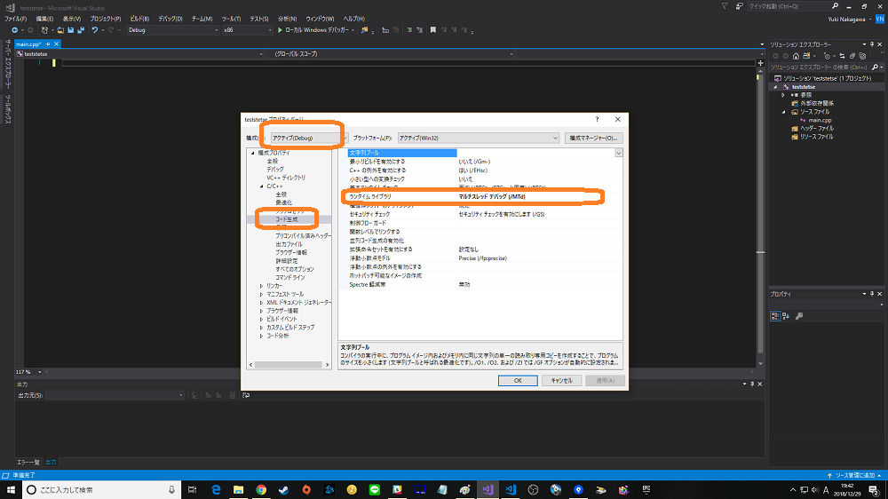
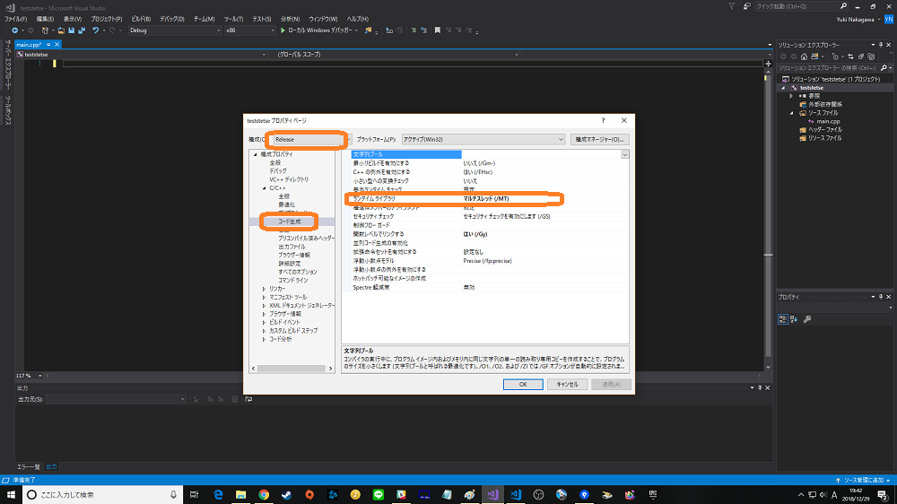

Effekseer導入方法
※最終更新日：18/12/29
対象
DXライブラリを使っている人で、
DXライブラリ用のシェーダ書きたくない、または手軽にエフェクトを使いたい人
目的
DXライブラリにてエフェクトを使いたい。
構成
No.1 Effekseerのダウンロード
No.2 プロジェクトの設定
No.3 テストプログラムにて動作確認
本編
今回はEffekseerの導入について説明します。
以下のURLからEffekseer for DXライブラリをダウンロードしてください。
Effekseerトップ


これをダウンロードしたら解凍して分かりやすい場所に置いてください。思いつかなければとりあえずDXライブラリと同じ階層に置いてください。
これでダウンロードは終わりです。次にプロジェクトの設定をします。
また、中身を軽く見ればわかると思いますが、これだけでDXライブラリは行えます。つまり、以前DXライブラリを使うために保存したフォルダは消しても一応大丈夫です。
以下の画像のようにしてください。と、言ってもDXライブラリの設定とほぼ同じです。






フォルダの中に「テストプロジェクト」というフォルダがあると思います。
その中にcppがあるので自分でプロジェクトを作成してmain.cppにコピペしてください。
コードにてEffekseer特有の関数はすべてコメントアウトをつけるようにしています。また、ループ外で呼んでいる関数は必ず呼んでください。
フォルダ内にcpp以外のものはサンプルのエフェクトなので画像と同じ要領でいつものような位置に置いてください。
・DXライブラリ
DX Library Copyright (C) 2001-2015 Takumi Yamada.
・Effekseer
The MIT License (MIT)
Copyright (c) 2011 Effekseer Project
Permission is hereby granted, free of charge, to any person obtaining a copy of
this software and associated documentation files (the "Software"), to deal in
the Software without restriction, including without limitation the rights to
use, copy, modify, merge, publish, distribute, sublicense, and/or sell copies of
the Software, and to permit persons to whom the Software is furnished to do so,
subject to the following conditions:
The above copyright notice and this permission notice shall be included in all
copies or substantial portions of the Software.
THE SOFTWARE IS PROVIDED "AS IS", WITHOUT WARRANTY OF ANY KIND, EXPRESS OR
IMPLIED, INCLUDING BUT NOT LIMITED TO THE WARRANTIES OF MERCHANTABILITY, FITNESS
FOR A PARTICULAR PURPOSE AND NONINFRINGEMENT. IN NO EVENT SHALL THE AUTHORS OR
COPYRIGHT HOLDERS BE LIABLE FOR ANY CLAIM, DAMAGES OR OTHER LIABILITY, WHETHER
IN AN ACTION OF CONTRACT, TORT OR OTHERWISE, ARISING FROM, OUT OF OR IN
CONNECTION WITH THE SOFTWARE OR THE USE OR OTHER DEALINGS IN THE SOFTWARE.
DirectX Tool Kit
https://directxtk.codeplex.com/
Microsoft Public License (Ms-PL)